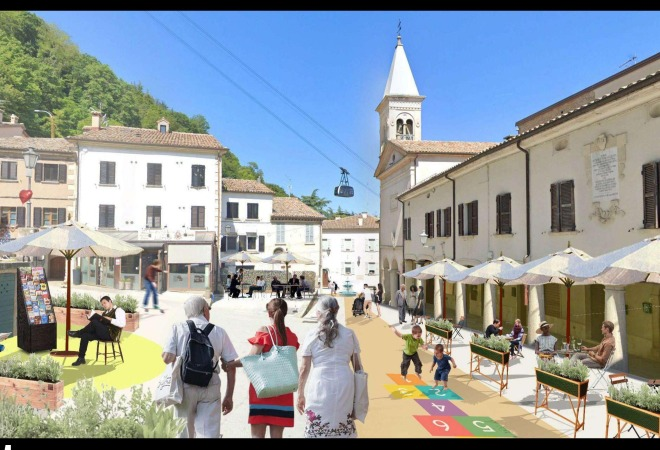
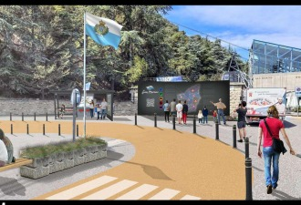
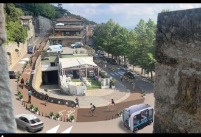

2024 Norman Foster Institute Master’s Programme on Sustainable Cities. Cohort work toward a conservation and sustainable development plan for the Republic of San Marino.

Essential services within walking distance — reduce car dependency, build equitable hubs.
Cohort work of the 2024 NFI Master’s Programme on Sustainable Cities. Iván Tamayo Ramos was a 2024 Fellow. Not sole authorship.
The Republic of San Marino is a landlocked microstate in Italy: 61.2 km², about 35,000 people, nine castelli. The capital, the City of San Marino, sits on Monte Titano and is a UNESCO World Heritage site. About two million tourists visit each year, mostly from Italy.
The 2024 cohort combined a comprehensive analysis with a holistic strategy inspired by the 15-minute city. A Decision-Support Tool (Grasshopper / Rhinoceros, ShapeDiver) tracks 32 measurable targets. Three case-study interventions concentrate on Borgo Maggiore and its link to the historic capital.
Borgo Maggiore town square. Reconstruct the historic centre by replacing parking with public space. To reach 1 m² of public space per resident within 500 m, the historic centre needs an additional 6,948 m² of paved public space; the square intervention removes 89 parking spots. New permeable parking is proposed on disused camping grounds at the outskirts, with pedestrian links across the San Marino Highway.
National Transportation Hub. Transform the parking lot at the Borgo Maggiore cable-car station into a national hub where a simplified five-line bus network converges: Borgo Maggiore–Falciano, Borgo Maggiore–San Marino, West Loop, East Loop, and Dogana–Rimini.
Shuttle and active mobility. A new Borgo Maggiore–San Marino shuttle, with one-way streets and space for bicycles and pedestrians, links the hub to the historic-centre gates. Piazzale Cava Antica, now a parking lot, would become a public square at the shuttle terminus.

